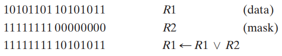
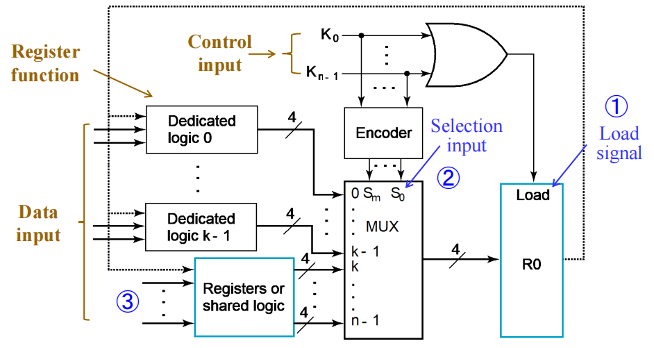

Chap 6 Registers and Register Transfers¶
Registers and Load Enable¶
引入
当n很大时，状态和输入组合的数量将随之变大，此时用状态图/状态表模型的表示就不太现实了。所以，我们用寄存器传输层级(Register Transfer Level, RTL) 设计模型来描述复杂电路的大量状态。在RTL设计方法中，通过不同类型的寄存器和组合电路来构建基本块，实现时序逻辑电路的设计。
大型数字系统的设计往往采用模块化(modular)、分层(hierarchical) 的方法，将系统划分为一些子系统或模块，包括寄存器、计数器、译码器、多路复用器、总线、算术元件、触发器和基本门等。
可将这一节视为时序逻辑电路的延伸。
n位寄存器(register) 由一组触发器和组合逻辑门构成，用来实现多位数据的存储等操作
- n位触发器保持数据，或者存储二进制向量值
- 组合逻辑门执行数据加工任务
计数器(counter)：随着时间脉冲的变化，不断在包含状态的固定序列内循环“扫描”的一种寄存器
寄存器和计数器都是时序函数块(sequential functional blocks)
- 寄存器主要用于存储和操纵信息
- 计数器主要用于序列和控制操作
🌰：
- 2位寄存器

- 4位寄存器

-
这里多了一个清除输入\(\overline{Clear}\)，用于在正式运行前的初始化(寄存器的所有值均置0)，当\(\overline{Clear} = 0\)时，对触发器进行异步复位。在正常运行时，\(\overline{Clear}\)应保持1，除非需要复位。这个输入是可选的。
-
D触发器寄存器能在每个时钟周期里加载(loading) 信息
加载(loading)：将新的信息传输至寄存器内。如果加载操作在同一时钟脉冲内完成，称之为并行完成。
负载(load)：控制寄存器的存储和加载的信号：
- load = 1：加载数据输入的值
- load = 0：将值存储至寄存器内
寄存器的符号：

注：由于Clear写在方框内部，且外部有个圆圈，因此Clear没有取反；但如果Clear写在外面，就需要写成\(\overline{Clear}\)
为了更合理地存储或加载信息，寄存器需要由控制信号控制，实现方法如下：
- 用一个信号来阻止寄存器的时钟输入
- 用一个信号，将寄存器的输出反馈至它的输入
Registers with Clock Gating¶
主时钟生成器(master clock generator)：提供一系列的时钟脉冲，应用于所有触发器和寄存器
门控时钟(clock gating)：通过逻辑门，对寄存器的时钟进行开关操作。
{kind=link}
此时控制信号\(C = Clock + \overline{Load}\)
- 当\(Load = 0\)时，\(C = 1\)，时钟信号失效，寄存器无法加载数据
- 当\(Load = 1\)时，\(C = Clock\)，时钟信号生效，寄存器可以加载数据
可能的问题
门的使用产生不同的传播延迟，从而导致时钟偏差(time skew) 的产生，即在同步时序电路中，相同的源时钟信号在不同的时间里到达不同的元件中。我们将采用下面的方法避免这个问题👇
Registers with Load-Controlled Feedback¶
解决方案：
- 保持时钟的连续运行
- 选择性地使用加载控制，来改变寄存器内的值 电路实现：

- \(EN = 0\)时，\(D = Q\)，也就是保持之前的值
- \(EN = 1\)时，\(D\)加载新的值
这种电路被称为带使能的D触发器(D flip-flop with enable)，可避免时钟偏差，所以更推荐这个方案。
🌰：带有并行加载的4位寄存器

Datapath and Control Signals¶

- 数据通路(datapath) 是执行数据加工操作(寄存器传输和微操作)的一组函数单元(比如ALU, MUX)，寄存器和总线
- 控制单元(control unit) 产生控制信号，告诉数据通路要做什么(决定操作序列)
Register Transfer Operations¶
寄存器传输操作(register transfer operations)：对存储于寄存器内的数据进行移动和加工操作，它由以下部分组成：
- 一组寄存器
- 微操作(microoperations)：对存储于寄存器内的数据进行的基本操作，比如加载(load)、计数(count)、移位(shift)、加(add)、按位或(bitwise OR)，等等
- 控制操作：监督系统的操作序列
寄存器传输语言(register transfer language, RTL)：一种用于描述寄存器传输中的逻辑行为的语言
表示寄存器的图形化符号：

RTL中的常用表示法：

注
- 特殊意义的字母：
- AR：地址寄存器(address register)
- PC：程序计数器(program counter)
- IR：命令寄存器(instruction register)
- n位寄存器，标号为0~n-1，默认0标在最右边，从右往左标号，这种顺序称为小端序(little-endian)，相反的顺序(即0在最左边，从左往右标号)称为大端序(big-endian)
- 看到上方图(d)：我们用L表示低阶字节07，用H表示高阶字节815。PC(L)可以写成PC(7:0)，PC(H)可以写成PC(15:8)
- R1 \(\leftarrow\) R2表示将R2的副本值传输给R1，其中R2被称为源(source)，R1被称为目的地(destination)
- 时钟不会出现在寄存器传输操作中
条件传输(conditional transfer)
控制表达式(control expression) 具体说明了运算的逻辑条件：
- if 控制表达式 == 逻辑‘1’ \(\rightarrow\) 执行运算
- if 控制表达式 == 逻辑‘0’ \(\rightarrow\) 不执行运算
If (K1 = 1) then (R2 \(\leftarrow\) R1) 可以简记为： $$ K1: (R2 \leftarrow R1) $$ 其中K1为控制变量，具体说明微操作的条件执行
图示：

而\(K3: R2 \leftarrow R1, R1 \leftarrow R2\) 表示同时交换R1和R2的值
RTL, VHDL和Verilog的寄存器传输符号

Microoperations¶
微操作(microoperation) 的4种类型：
- 传输(transfer)：将数据从某个寄存器移到另一个
- 算术(arithmetic)：对存储器内的数据执行算术运算
- 加法 +
- 减法 -（一般用补码实现，具体操作见[[Chap 3 Combinational Logical Design#Unsigned 2's Complement Subtraction|这里]]）
- 乘法 *
- 除法 /
- 逻辑(logic)：操纵数据，或者执行按位逻辑运算
- 逻辑或 \(\vee\)
- 逻辑与 \(\wedge\)
- 逻辑异或 \(\oplus\)
- 非 \(\overline{}\)
- 移位(shift)：对寄存器内的数据进行移位
具体描述

注：关注第2,3行(反码、补码的表示)
加法/减法器
运算结果赋给R1
注：\(X\)决定运算模式(0：加法，1：减法)，\(K1\)为使能信号
电路实现：
注：溢出(即最高位的进位) 输出会被传输到V中(一个触发器)(前提是K1 = 1)

注：对于n位的寄存器，一个逻辑微操作需要的门的数量为n个
Example
注：
- 条件中出现的'+'表示“或”运算
- 而\(R1 \leftarrow R1 + R3\) 中的‘+’表示“加法”微操作
- 用“\(\vee\)”表示“或”微操作
- 逻辑与：
可以发现我们仅保留了R1的低位部分，高位部分均变成0

- 逻辑或：
可以发现我们仅保留了R1的低位部分，高位部分均变成1
- 逻辑异或：可以发现R1的低位部分得到保留，而高位部分全部取反

注：
- 具体实现方法见移位寄存器部分
- 移位往往用到“0填充(zero fill)”：左移-右边补0，右移-左边补0。这样的位称为进入位(incoming bit)
- 移出去的位一般就抛弃掉，这种位称为移出位(outgoing bit)
- 有时，需要用1个单独的触发器提供要移位的数据，或者获取移位后的数据
- 还有更复杂的移位（翻转，算术运算……），这里就略过了
- 还可以实现多个位的移动，如果通过1个变量指定移动的位数，称该变量为移位量(shift amount)
Register Transfer Structures¶
类别：
- 基于多路选择器的传输(multiplexer-based transfer)：由寄存器的专有(dedicated)MUX，从多个输入中进行挑选
- 基于总线的传输(bus-based transfer)：由一个共用的MUX(它驱动一条向多个寄存器提供输入的总线)从多个输入中进行挑选
- 三态总线(three-state bus)：由一个三态门驱动器(其输出与供给多个寄存器的总线相连接)从多个输入中进行挑选
- 其他传输结构：使用多个MUX，多条总线，或者上述类别的组合
Multiplexer-Based Transfers¶
🌰：
$$ K1: R0 \leftarrow R1 \quad K2\overline{K1}: R0 \leftarrow R2 $$ 框图：

更详细的内部结构图：
Bus-Based Transfers¶
总线传输的实现方法：
- 多路选择器
- 三态门
Dedicated MUX-Based Transfers¶
事实上，这里的寄存器传输并不是用总线实现的，放在这里是为了和下面基于总线的传输进行对照

- 每个MUX都是某个寄存器的专用逻辑(dedicated logic)(后面会讲到)
- 能够实现同步传输
Multiplexer Bus¶
注：
- 由一个MUX驱动的单个总线，也就是说该MUX是寄存器的共用逻辑(shared logic)
- 优点：电路更精简，成本更低
- 缺点：同一时间内只能传输一个数据
Three-State Bus¶

注：
- 用三态门替代3输入MUX，进一步减少成本，但传输还是受限的
- 这里的符号可以进一步简化，最终可以得到右侧的电路图

- 这里我们用到了使能信号\(EN\)：当\(EN = 1\)时表示输出，当\(EN = 0\)时表示输入
- 真正决定是否读入寄存器的是\(Load\)
Shift Registers¶
移位寄存器(shift register) 能将数据向MSB或LSB的位置移动
Serial Shift Register¶
移位寄存器最简单的实现：仅用一组按行排列连接起来的D触发器构成：

- 串行输入/右移输入(serial input/ shift right input)——数据输入
- 串行输出(serial output)——数据输出
符号：


- CP表示时钟脉冲，\(T_i\)表示第i个时钟周期
- '?'表示未知状态，
Parallel Load Shift Registers¶
"并行"主要体现在两方面：
- 并行输出(parallel output)：在同一时钟周期内得到所有触发器的结果
- 并行载入(parallel load)：在同一时钟周期内对所有触发器载入数据
n位并行负载移位寄存器(parallel load shift registers)

细节分析：
- 观察右侧的触发器，发现其结构大致类似上面的串行移位
-
较麻烦的可能还是分析每个触发器的逻辑门，每个与门的功能如下：
- 第一个与门\(F_{i1} = \begin{cases}Shift \cdot SI & \text{第一个FF} \\ Shift \cdot F_{(i-1)1} & \text{其余FF}\end{cases}\)，当\(Shift = 1\)时，寄存器执行移位操作
- 第二个与门\(F_{i2} = \overline{Shift} \cdot Load \cdot D_i\)，当\(\overline{Shift} \cdot Load = 1\)时，寄存器执行并行加载
- 第三个与门\(F_{i3} = \overline{Shift} \cdot \overline{Load} \cdot Q_i\)，当\(\overline{Shift} \cdot \overline{Load} = 1\)时，寄存器保持上次的值
功能表：
Shift Registers with Additional Functions¶
上述移位寄存器只能进行单向移位操作，因此被称为无向移位寄存器(undirectional SHR)。下面我们将实现一个具备右移、左移、并行加载、保持功能的SHR，被称为双向移位寄存器(bidirectional SHR)

功能表：

Counters¶
计数器(counter) 是一种时序电路，它在特定的状态序列中进行计数，能够向上数、向下数等等
两种常见类型：
-
异步计数器/行波计数器(asynchronous counters/ripple counters)
- 对于表示最低位的触发器，它的时钟输入与时钟相连
- 对于表示其他位的触发器，它们的输出与时钟输入相连，因此电路不是同步的
- 当逐位接近最高位时，输出发生改变的延迟将会越来越大
- 优点：低能耗
-
同步计数器(synchronous counters)
- 时钟与触发器的时钟输入直接相连
- 用逻辑实现想要的状态序列
Ripple Counters¶

工作流程：
- 当触发器A的时钟输入出现正边沿时，A取补
- 触发器B的时钟输入是触发器A的输出的补
- 当触发器A的输出从1 \(\rightarrow\) 0时，触发器B的时钟输入就会出现正边沿，导致B取补 下面的时序图可以更加直观地展示上述内容：

注：
- 蓝绿色箭头表示“工作流程”所述的因果关系
- 对应的状态序列(B, A) = (0, 0), (0, 1), (1, 0), (1, 1), (0, 0), (0, 1)……
理解行波计数器
这种电路之所以成为行波计数器，是因为每次边沿的变化（这里是正边沿）都会导致下一个触发器状态的改变。这种变化就像水面的涟漪一样在触发器“链”上传播(每次变化发生于前一阶段的时钟-输出延迟之后)
对于3位行波计数器，当C = B = A = 1时，计数器的状态为(C, B, A) = (1, 1, 1)，下一次时钟的增加使得(C, B, A) = (0, 0, 0)。从下面的时序图中，我们发现：
- 时钟-输出延迟\(t_{PHL}\)导致时钟边沿不断增加的延迟
- 对于n为行波计数器，最坏情况的延迟为\(n \cdot t_{PHL}\)

4位行波计数器的框图

Synchronous Counters¶
为了消除行波影响，我们让每个触发器使用共同的时钟，并用一个组合电路来生成下一状态。例如对于升计数器(up-counter)，我们会使用一个自增器(incrementer)
内部细节：

- 内部逻辑：蓝色方框表示自增器
- 计数使能(count enable, EN)：迫使与门链的输出均为0，用来保持状态
- 出进位(carry out, CO)：自增器的一部分。通过将CO与另一个计数器的EN端连接，构建一个更大的计数器
上图中，与门链导致“进位链(carry chain)”的出现，因而产生较长的通路延迟，这种计数器的形式称为串行门(serial gating)
将与门链 \(\Rightarrow\) 并列的与门，我们得到了另一种形式——并行门(parallel gating)，这种形式减少了通路延迟，类似超前进位。它利用CO和EN来阻止较长的通路。逻辑图如下：
布尔方程：
符号：

Other Counters¶
- 降计数器(down counter)：向下计数
- 升降计数器(up-down counter)：既可以向上，也可以向下计数，取决于控制输入的值，比如\(Up/\overline{Down}\)
- 并行加载计数器(parallel load counter)：能够并行加载可用的值，取决于控制输入(比如\(Load\))
- 模n计数器(divide-by-n/ modulo n counter)：
- 对除以n的余数进行计数
- 或者对任意n个状态的序列进行计数（根据具体状态分析）
- BCD计数器是一个模10计数器
Up-Down Binary Counter¶
🌰：4位升降计数器，有使能输入EN，选择输入S(S = 0时向上数，S = 1时向下数)
输入方程：
$$ \begin{align} D_{A0} & = Q_0 \oplus EN \notag \ D_{A1} & = Q_1 \oplus ((Q_0 \cdot \overline{S} + \overline{Q_0} \cdot S) \cdot EN) \notag \ D_{A2} & = Q_2 \oplus ((Q_0 \cdot Q_1 \cdot\overline{S} + \overline{Q_0} \cdot \overline{Q_1} \cdot S) \cdot EN) \notag\ D_{A3} & = Q_3 \oplus ((Q_0 \cdot Q_1 \cdot Q_2 \cdot \overline{S} + \overline{Q_0} \cdot \overline{Q_1} \cdot \overline{Q_2} \cdot S) \cdot EN) \notag \ \end{align} $$ 该方程既能用串行门实现，也能用并行门实现，这里就不给出具体的实现了。
Counter with Parallel Load¶
电路实现：

功能表：

注：可以看到Load的优先级高于Count，因为只要Load = 1，不管Count有什么值，计数器执行加载功能
Synchronous BCD¶
状态表：

注：10-15(即1010-1111)是我们不关心(don't care) 的情况
使用K-maps，对下一状态的方程进行两级优化，得到以下方程：
思考
如果计数器的电源受到干扰，或者受到其他影响，使得计数器的状态不在0000-1001之间，会出现什么问题呢？
\(\therefore\) 我们需要让计数器具备“自愈能力(self-healing ability)”，使得它能在2个时钟周期内，从异常状态中回到正常状态——利用好那6个“不关心”的状态，可以实现这个“自愈能力”，状态表和状态图如下：
考虑更高要求的自愈能力
- 报错功能：电路需要表明遇到了非法状态。对于上述电路，\(Error = Q_8Q_4 + Q_8Q_2\)
- 在1个时钟周期内，状态从非法回到合法
- 从非法状态返回至一个具体的状态(比如0)
另一种实现方法：并行加载二进制计数器 + 与门
电路实现：

注：当计数到1001时，Q0 = Q3 = 1，这使得Load = 1，计数器执行加载功能，将读入D(3: 0)的值，即0000，从而实现0-9之间的计数
Counting Modulo N¶
下列技术将用到带有异步/同步的清空(clear)，以及/或者并行加载(load) 的n位二进制计数器： + ❌在模N计数中，当检测到最后的数N时，进行异步清0，或者异步加载值0。然而，这种方法使得数字仅在很短的时间内出现，导致在某些情况下无法正常工作 + ✅在模N计数中，当检测到最后的数N - 1时，同步清0，或者同步加载值0 + 检测最后的数，使用加载功能提前预设值，满足==最后的数 - 预设值 = N - 1==，也就是说计数的范围变成了[预设值，最后的数]。实在看不懂的话见下例中第2种实现方法
注：上面的BCD计数器本质上是一个模10计数器
🌰：模7计数器

注：原理同BCD计数器，只是它是数到6就要返回0
预设加载值9，当数到14时，由于 14 - 9 = 7 - 1，因此需要回到9，计数范围为\([9, 14]\)
电路实现：

注：
- 预设值是在输入D(3: 0)处设置
- 对于该计数器，如果最后的数设为了15，那么可以利用进位CO检测该最后的值(这样就省去一个与门了)
Register Cell Design¶
时序电路设计的两种方法
- 基本设计方法：将触发器和逻辑门作为基本的构建模块
- 寄存器传输层级(register transfer level, RTL)设计：将不同类型的寄存器(e.g. 计数器，移位寄存器)和函数块(e.g. MUX, 加法器)作为基本的构建模块
注：RTL设计是一种数据流方法——能够将数据从一个寄存器传到另一个
比较：
| Basic Design | RTL Design |
|---|---|
| 基本构建块为逻辑门和触发器 | 基本构建块为寄存器和函数块 |
| 本质上更加机械化 | 更贴合行为描述，更加符合直觉(建立了数据流模型) |
| 仅适用于状态数量少的电路 | 能够实现具有大量状态的复杂电路 |
在组合电路中，我们使用迭代阵列实现复杂的组合电路。同样地，我们可以将这种思想运用到时序电路的设计中——将迭代组合电路和触发器相连接，构建一个双态时序电路，称为寄存器单元(register cell)。只要我们构建了一个存储器单元，然后复制n份副本，我们就构建出能够执行一个或多个微操作的n位寄存器。
由此，我们得到了寄存器设计的步骤：
- ⭐设计具有代表性的寄存器单元
- 复制并连接寄存器单元，构成完整的寄存器
- 修改某几个寄存器单元以解决一些特殊情况或边界问题
寄存器单元设计的方法：
-
MUX：使用n输入MUX，以及一系列的传输源和函数
- 专用逻辑(dedicated logic)：实现微操作的组合逻辑被视为寄存器的一部分
- 共用逻辑(shared logic)：被多个寄存器共用的，实现微操作的组合逻辑
- 通过控制信号\(K_0, K_1, \dots, K_{n-1}\)的或运算，生成加载使能信号
-
如何选择来自源，或/和传输函数？
- MUX + 编码器(如图所示)：控制输入需要被编码
- n \(\times\) 2 与-或门：控制输入不需要被编码
-
- 找到状态图或状态表，注意只有两个状态分配后的状态 = 寄存器单元的输出值
- 运用Chap 4 介绍的流程来完成单元设计
- 优化：K-maps(4-6个变量)、手动优化或计算机辅助(更多的变量)
寄存器单元的规范包括：
- 寄存器函数(register functions)：一般用寄存器传输表示
- 控制输入(control input)
- 无编码形式：比如Load, Shift, Add，1个时钟周期内至多有1个输入为1，即(0, 0, 0), (1, 0, 0), (0, 1, 0), (0, 0, 1)
- 编码形式：比如S1, S0，所有的组合为(00, 01, 10, 11)
- 数据输入(data input)
🌰：
题目：

- 寄存器的加载信号：Load = CX + CY
- 由于控制输入的数量少，因此不需要用到编码器，我们直接将控制输入与MUX的选择输入连接，得到：S1 = CY, S0 = CX
- 寄存器的数据输入： $$ \begin{align} D1 & = A_i \leftarrow B_i \vee A_i \quad (CY, CX) = (0, 1) \ D2 & = A_i \leftarrow B_i \oplus A_i \quad (CY, CX) = (1, 0) \ \end{align} $$
- 当Load = 0，即(CX, CY) = (0, 0)时，寄存器A保持状态
电路实现：

单个元件的门成本 = 19，共享译码器的成本 = 8
状态表：
注：
- 4个变量将给出状态表的16个状态项
- 因为我们不会用到CX = CY = 1的条件(即don't care conditions)，因此实际上我们只关心12个项
K-map化简：

我们得到SOP方程为： $$ D_i = CXB_i + CY\overline{A_i}B_i + A_i\overline{B_i} + \overline{CY}A_i $$ 进一步化简(为了减少门成本)，得到： $$ D_i = CXB_i + A_i \oplus (CYB_i) $$ 门输入成本 = 2 + 8 + 2 + 2 = 14，因此比法一更节省成本。而且由于没用到使能信号，成本将进一步减少
Info
书上(\(P_{354-359}\))还有2个寄存器单元设计的例子，均采用时序电路设计的方法（没用到寄存器），值得好好阅读和理解
Control of Register Transfers¶
Introduction to Register Transfer Systems¶
基本元素：
- 一组寄存器：大多数是数据通路，部分为控制单元
- 基本操作(微操作)：寄存器传输
- 控制：监督寄存器传输序列
Register Transfer System Design Procedure¶
- 写下详细的系统规范(specification)
- 找出所有的输入信号(数据、控制、状态)，所有的输出信号(数据、控制、状态)，以及寄存器的数据通路和控制单元
- 找出系统的状态机(state machine diagram)，包括作为输出的数据通路和控制单元上的寄存器传输
- 找出所有的内部控制和状态信号，用这些信号将状态机中的输出条件和行动分开(包括寄存器传输)，并将它们用表格表示出来
- 画出数据通路的框图，包括所有的控制、状态输入和输出；如果包括寄存器传输的硬件，画出控制的框图
- 设计出具体的寄存器传输逻辑，用于数据通路和控制
- 设计控制单元逻辑
- 验证数据通路和控制单元结合后的操作是否正确，若失败，调试系统并验证改变后的系统，直至符合预期目标
A Design Example
🌰：Dashwatch（一种简单的停表，时间上限为99.99s）

- 输入：
- START：将时间复位至0，随后开始计时
- STOP：停止计时，在4位BCD数码管上显示最近的时间
- CSS：比较、存储和显示最小的时间
- RESET
- 输出：4位BCD数码管 + 小数点
- 寄存器：
- 4位BCD计数器(TM)：每隔0.01s向上数
- 16位并行加载计时器(SD)：存储最短的时间
所有的输入、输出和寄存器：

寄存器传输输出的状态机(摩尔型)

- S1：复位状态，初始化SD位1001100110011001(99.99)，即最大值
- S2：紧随S1发生，使TM = \((0000)_{BCD}\)
- S3：计时状态。按下START键后进入计时状态，按下STOP键后退出。在该状态下，T的值在每个时间脉冲内自增1(0.01s，时钟频率 = 100Hz)，DIS显示TM的值
- S4：决定阶段，从以下3个状态中选择1个：
- 比较、存储并显示最短时间
- 继续显示TM的值
- 重新开始
- S5：比较TM和SD的值
- S6：如果TM更小，TM的值被加载至SD内
- S7：重新开始，并显示SD存储的最短时间
输出控制/状态表：

找出内部控制/状态信号：
-
TM：计时器
- 复位至0：RSTM
- 向上计数的使能信号：ENTM
-
SD：最短时间
- 加载SD：LSR = 1
- 选择输入 9999：UPDATE = 0
- 选择输入 TM：UPDATE = 1
-
DIS：显示(\(B_1, B_0, DP, B_{-1}, B_{-2}\))
- 选择输入 TM：DS = 0
- 选择输入 SD：DS = 1
-
比较TM 和 SD（状态）
- TM < SD：ALTB = 1
- TM \(\ge\) SD：ALTB = 0
数据通路：

数据通路的开发细节：
-
TM：带有同步复位的4位BCD计数器
- 基于先前的BCD加法器设计
- 添加同步复位SRST
- SRST = RSTM
- C0(进入的进位) = ENTM
-
A < B 比较器
- 比较TM 和 SD
- 设计从左往右的迭代单元阵列，输出C0
-
SD：标准16位并行加载寄存器
- LOAD = LSR
- 使用16位2-1MUX，从\(9999_{BCD}\)和TM中选择并行加载输入D
- S = UPDATE
显示逻辑：
- 16位2-1MUX
- 4位BCD7段数码管转换器
- 4位七段数码管显示器(带有小数点)：小数点控制：DP = 1
取代寄存器传输的控制信号输出的状态机：

使用D触发器进行独热码状态分配(7位)，得到下列输入方程：

输出方程为：
注：课本上还有一个更复杂的例子，我还没来得及看……
Microprogrammed Control¶
- 不可编程的系统(non-programmable system)——具体系统
- 没有编程计数器(program counter, PC) 或者类似的寄存器
- 控制单元不进行获取和执行指令的操作，而是基于输入和数据通路的状态位，决定要执行的操作(序列)
- 可编程的系统(programmable system)——通用系统
- 一部分输入由一系列指令(instruction) 构成，称为程序(program)
- 通常存储于内存，并且由PC决定地址
- 控制单元负责获取和执行指令

Serial Transfers and Microoperations¶
- 当系统在一段时间内只能传递或操作1位信息时，称这个系统处于串行模式(serial mode)
- 与串行传输相对的并行传输(parallel transfer)：同时传输寄存器的所有位

串行传输(移位)：

🌰：串行加法器(serial adder)：时序电路，一次只能执行1位二进制加法
用2个状态记住进位： + G：carry in = 0 + H：carry in = 1
状态图：

状态表：

状态分配后的状态表：

化简(略)
输入方程：\(D = ab + ay + by\) 输出方程：\(S = a \oplus b \oplus y\)
框图：
状态图：

状态表，输入方程和输入方程

框图：

上面2个电路仅保存了进位，如果我们想实现 \(A \leftarrow A + B\)，就需要保存A的值。教材给出了对应的实现：

创建日期: 2024年6月1日 17:09:32
评论区